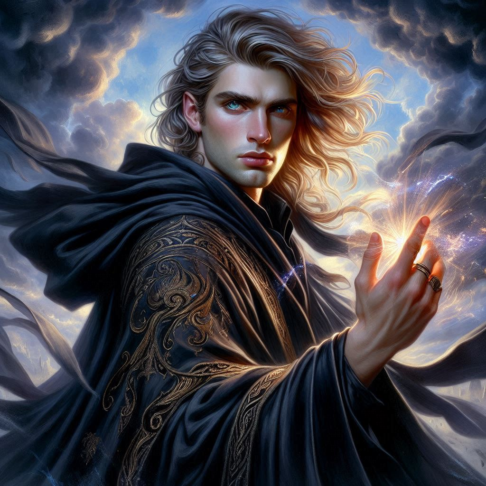

Jorsh's Vision
You suspect a pure human with no elvish blood would not have been able to withstand the charm spell used by Princess Hawthorn. You can still feel your heart racing from the effects of her magic, but after a few deep breaths, you feel more like yourself. She was obviously angry when you pulled away and rejected her charms, but you invoked your own magic… an intuitive magic… and repelled her advances. You were also able to win her over… for now.
“I’ll follow you, Princess. But not because your seduction has succeeded,” you say defiantly. “I’ll let you accompany me on my quest out of my loyalty to the crown. I have sworn an oath to protect Belladonna and the Kingdom of Yew.”
“Fine,” she replies coldly. “But I still think you and I have something special.” She pats your cheek sharply and heads into the ruins, walking through the sleeping mercenaries without care for whether she stepped on or around them.
You and Princess Hawthorn move deeper into the crumbling ruins, overgrown by the ancient forest. The trees tower over you like silent guardians of a forgotten world. The air is thick with tension, both from the dark magic that seems to pulse around Hemlock Falls and from the unspoken words lingering between you and Hawthorn since her nearly successful charm spell. The forest floor is damp beneath your boots, each step bringing you closer to something—something important.
Then, you see it.
A faint glow emanates from the ground just ahead. You move toward it, heart racing, and crouch beside an intricately carved rune etched into a large stone. Its glow pulses like a heartbeat, rhythmic and alive.
“This... this is his magic,” you say, barely above a whisper. The rune is unmistakable—Jorsh’s work. You can feel it in the air, the same energy that once drew you to him.
Hawthorn kneels beside you, her sharp eyes scanning the symbol. “Careful, Kira,” she warns, her voice low and edged with suspicion. “Magic like this—it’s meant to deceive.”
She would know, you think to yourself. But you can’t pull your gaze from the rune. Something inside you stirs, old feelings that you’ve tried to bury ever since you were tasked with capturing Jorsh. The rune pulses again, and before you can react, light explodes from it, enveloping you in a blinding flash.
When the light fades, you’re no longer in the forest.
You stand on the edge of a cliff, the sky above a dark swirl of storm clouds. The wind howls around you, and standing at the cliff’s edge is a figure you know all too well.
Jorsh.
He turns slowly, his cloak billowing in the wind. His eyes—those familiar, piercing eyes—lock onto yours, and the world seems to narrow until it’s just the two of you. For a moment, the weight of your mission, of your duty, feels distant, insignificant.
“Kira,” he says, his voice like a memory. “I knew you would find me.”
You take a step forward, heart hammering in your chest. “Jorsh... why? Why did you betray us?”
His gaze softens, and for the first time in years, you see the boy you once knew—the one you once cared for. “It wasn’t betrayal,” he says. “It was survival. The treasure of Hemlock Falls—it’s more than just wealth, Kira. It’s the key to saving my family, to redeeming everything we’ve lost.”
Your heart aches at his words, at the desperation in his eyes. You want to believe him, to think that there’s more to this than the betrayal that’s haunted you since the day he disappeared. But can you trust him?
“I never wanted to hurt you,” Jorsh continues, stepping closer. “But I had no choice. The Trade Ministry, Varis, the dark elves—they would have destroyed everything I love. But with the treasure, I can change that. We can change that.”

You feel a surge of emotion—anger, confusion, and something else you don’t want to admit. “And what do you want from me?”
Jorsh stops just inches away from you, his gaze intense. “I want you by my side, Kira. We can end this together. Use the word ‘Vyrethane,’ and I’ll bring you to me. We can stop Varis, we can save Belladonna... and we can save each other.”
The wind whips around you, but it feels like the world has gone still. His words tug at something deep inside you, the part of you that still remembers the bond you once shared. But before you can speak, the vision shudders, as if the very air is tearing apart.
“Kira!” Hawthorn’s voice breaks through, and suddenly the vision snaps. You’re back in the forest ruins, the rune’s glow fading as the magic dissipates.
Hawthorn grabs your arm, her eyes wild with urgency. “He’s manipulating you. Can’t you see that? Jorsh is dangerous. He’ll use you and leave you broken, just like he’s done to everyone else.”
You pull your arm free, your mind spinning. The vision felt so real, and Jorsh’s words... they struck a chord you didn’t expect. But now, standing here with Hawthorn, doubt creeps in. Can you really trust Jorsh? Or is Hawthorn right—are you being drawn into something darker than you realize?